$ cat about.txt
I like building things end to end: a game that turns the Windows desktop
into a level, an e-commerce admin with its own analytics engine, and an
AI video SaaS. Mostly TypeScript, from the UI down to the database.

SRC: PRIVATE — the code for these projects is not public. Happy to walk through any of them in a call.

$ ./contact.sh
> github.com/goonnnn0101
> INSERT COIN TO CONTINUE_